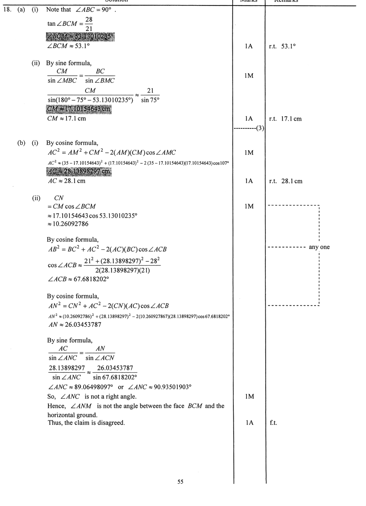

2013 DSE 數學 P1 Q18 答案＋詳解
題目（中文卷）
(a) 圖 3(a) 顯示一張三角形紙卡 (ABC)，其中 (AB = 28 \, \text{cm}) 、(BC = 21 \, \text{cm}) 及 (AC = 35 \, \text{cm}) 。設 (M) 爲 (AC) 上的一點使得 (\angle BMC = 75^\circ) 。

求
(i) (\angle BCM) ，
(ii) (CM) 。
(b) 文俊將 (a) 所描述的三角形紙卡沿 (BM) 摺起，使得 (AB) 及 (BC) 均位於水平地面上，如圖 3(b) 所示。已知 (\angle AMC = 107^\circ) 。
(i) 求在水平地面上 (A) 與 (C) 間的距離。
(ii) 設 (N) 爲 (BC) 上的一點使得 (MN) 垂直於 (BC) 。文俊宣稱面 (BCM) 與水平地面間的交角為 (\angle ANM) 。你是否同意？試解釋你的答案。
English version（英文卷題目）
(a) Figure 3(a) shows a piece of triangular paper card (ABC) with (AB = 28 \, \text{cm}), (BC = 21 \, \text{cm}) and (AC = 35 \, \text{cm}). Let (M) be a point lying on (AC) such that (\angle BMC = 75^\circ).

Find
(i) \(\angle BCM\),
(ii) \(CM\).
(3 marks)
(b) Peter folds the triangular paper card described in (a) along (BM) such that (AB) and (BC) lie on the horizontal ground as shown in Figure 3(b). It is given that (\angle AMC = 107^\circ).
(i) Find the distance between \(A\) and \(C\) on the horizontal ground.
(ii) Let \(N\) be a point lying on \(BC\) such that \(MN\) is perpendicular to \(BC\). Peter claims that the angle between the face \(BCM\) and the horizontal ground is \(\angle ANM\). Do you agree? Explain your answer.
(5 marks)
官方評卷參考（Marking Scheme）

考評報告
良好。部分考生忽略了∠ABC=90°,因而利用餘弦公式求∠BCM。良好。很多考生能利用正弦公式求CM。平平。部分考生能利用餘弦公式求水平地面上A與C間的距離,惟很多考生誤以為AC=35cm。甚差。大部分考生誤以為AN垂直於BC。